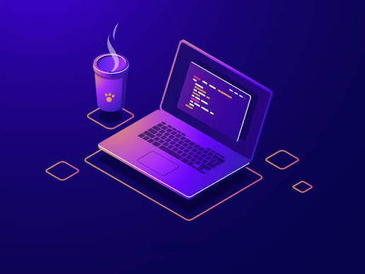
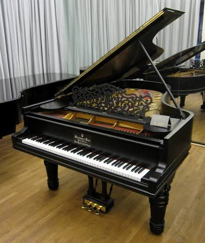
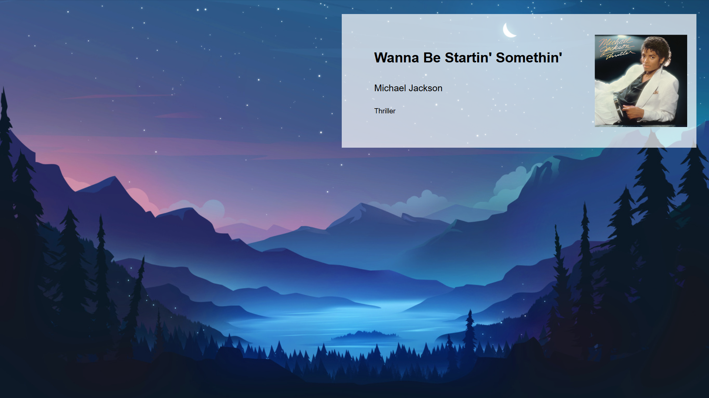

I’m Felix, a programmer and a high school student in New York City.
With knowledge in python, js, sql, nosql, json, bash, etc and using tools such as VS Code, git bash, github, local send, WSL and more


On top of everything else, I enjoy playing the piano. I’ve been playing for three years.
I also like video games; some of my favorites include Zelda: Breath of the Wild, Undertale, Hollow Knight, Celeste, and many others. But without a doubt, my favorite game is Minecraft, because of the level of creativity it allows for.

My Repositories
One of my recent projects was an interactive wallpaper for Lively Wallpaper, using its audio API. Link of the repository